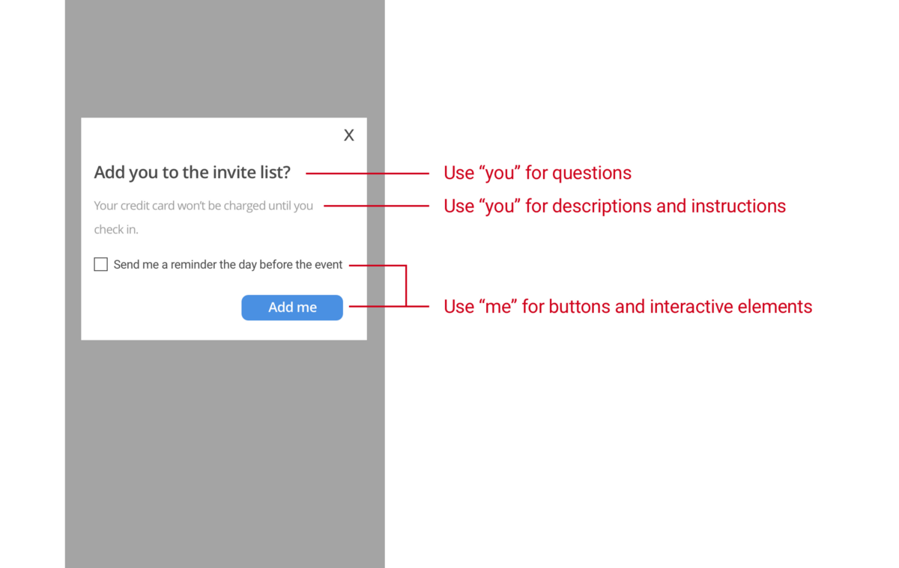

Hello World
CodeTengu Weekly 碼天狗週刊
CodeTengu Weekly 會在 GMT+8 時區的每個禮拜一早上 10:00 出刊，每一期會從目前的 curator 名單中選出三位來負責當期的內容，每個 curator 各自負責不同的領域。如果你在這一期沒有看到自已感興趣的東西，說不定下一期就會有了。你也可以瀏覽一下前幾期的內容。
以下是目前的 curator 陣容：
- @vinta - I failed the Turing Test - 科幻迷，最近在讀 The Best of Isaac Asimov
- @saiday - Imnotyourson - 太熱了
- @tzangms - Oceanic / 人生海海 - 衝動型購物
- @fukuball - ImFukuball - 最近好窮，有案子可以接嗎？
- @wancw - 因為工作看韓劇，同時開始追美漫
- @mingderwang - Ethereum enthusiast
- @kako0507 - 熱愛嘗試新事物的前端工程師
- @chiahsien - 我們在找 iOS 工程師與其它人才，歡迎來跟我當同事。
- @hiroshiyui - 非典型司書
- @uranusjr - Smaller Things - 不愛談技術的技術人，最近對做菜很有興趣
- @kkdai - 態度萬歲 - 喜歡 Golang 的略懂工程師
- @yhsiang
大家也可以關注我們的 Facebook、Twitter、GitHub 或微博，有很多 Weekly 看不到的內容。有任何建議或疑問也可以來 Gitter 聊聊，歡迎亂入 👺
 @uranusjr
@uranusjr

Is this my interface or yours?
作者從 Windows 上「我的電腦」圖示的設計切入，觀察如何在 UI 上適當使用所有格修飾名詞。文中比對了許多軟體和網站的用法，發現「使用者的東西」在不同情境下會可能稱作「我的」、「你的」、甚至直接省略冠詞，例如 Dropbox 只會單純寫「檔案」，而不會特別說明。
整體而言：
- 如果你想強調使用者與產品互動的關係，就用「我」，但若沒有絕對必要，最好省略。
- 當產品問問題、引導使用者、或者描述事情時，用「你」，強調對話的感覺。
Designing Pythonic APIs
寫 Python 的人應該多少都知道 Requests 這個 library 吧。它很好用，但其實 Requests 能做到的事情，大都可以用內建函式庫 urllib 辦到。這篇文章試著探討為什麼大家都討厭內建函式庫，卻喜歡 Requests——API 設計。
其實我不太同意文中幾個觀點。例如在簡單的 GET 與 POST 狀況下，urllib 不會比 Requests 長（差一行吧），這個在 comments 也有提到。Requests 在這裡確實還是比較好，但我認為主要是 GET 和 POST 的區別很 explicit，而不是短。
有些東西則比較像是 design decision。作者認為 Requests 把 HTTP 與 JSON operations 做成強耦合是優點，但用這個講法，十年前的人就會把 XML parsing 和 HTTP 強耦合——然後現在的人就會大翻白眼，吐槽這種沒人在用的協定為什麼要內建。當然每個時代有各自的需求，Requests 整合 JSON parser 確實讓它成為當代最合適的工具，但我不認為這代表它的 API 較好。預設不 raise exception 的選擇也是，或許在 HTTP 上這樣設計確實不錯，但這仍然不能成為通則。一般而言，exception 通常是比 error code 與 sentinel value 更好的報錯方式，至少在寫 Python 時如此。
另外像 Response.text 與 Response.json() 這種年輕犯下的過錯已經被吐槽過很多次，這裡就不多說了。
但我還是推薦讀一下這篇文章。你不需要同意作者（我就不同意），但至少他對 Requests 與 urllib 設計差異的觀察還是有價值。看看兩者，下次設計 API 時就能有更多想法。不要完全照抄 Requests 就好。
在 Mac 或 Linux 上用 command line 與 Git 開發
朋友寫的 GitBook。我覺得我沒辦法介紹得更好（絕對不是懶得寫！），就看他自己的介紹吧：
這本線上書主要是給不熟悉 command line 而想要在 Mac 或 Linux 上開發程式的人。內容涵蓋從最基礎的「如何打開終端機」到常用 command line 指令、使用 brew / apt-get 安裝套件, 以及基本的 git 使用。
Mac 的部分會以開發者本身的電腦作為目標教學, 而 Linux 則是以雲端 (遠端) 主機為目標, 我們所使用的 Linux Distro 會以 Ubuntu 為主。
會看這個週刊的人或許也不太需要這個。如果有朋友問你怎麼入門，就試著推薦看看吧。
轉眼、24 年
上週吃飯時有個朋友在教高中生，聽他講了很多現在高中生的問題，例如不太主動，講一步才會做一步之類的。其實我一向不喜歡這個話題，如果是「我們當年哪會這樣」的抱怨，通常都是當成老人自爽直接無視；但這不太一樣，是人家看了很多年高中生才做出的觀察，有一定的參考價值。我自己也是有接觸一些教學，雖然年紀沒那麼大、教得人也少、尤其對高中生的接觸更比不上，但就我的超小樣本，感覺並沒有很糟啊，至少不比我自己以前差。似乎不太符合他的觀察。
遇到這種認知不匹配時，第一個要考慮的就是母群體差異：我會接觸的人也都是寫程式相關的人，或許因為 self-selection bias 而和一般樣本有偏差。
似乎也沒錯。台灣在這塊領域沒有所謂科班，學校也沒教相關的基礎知識，所以如果走上程設路（然後沒有換跑道），肯定是因為本身受到什麼啟發，產生了獨特的興趣，才會主動學這方面的東西。
也剛好前陣子 Twitter 在流行 #firstsevenlanguages，才回憶了一下我誤入歧途踏進程設的歷程：一開始是為了做喜歡東西的網頁，後來想做簡單工具，最後一根稻草是換了 Mac，發現以前習慣的軟體都沒有，只好自己寫。然後就變得好想聽聽別人的版本。你為什麼會開始寫程式？為什麼現在還在寫？
 @yhsiang
@yhsiang
Write Code to Rewrite Your Code: jscodeshift
在開發的時候，為了增加效率會使用一些 framework 或 library 來加速。但是隨著 codebase 越來越大，一旦碰上了 library 的 API 改變。此時，就會開始痛苦無比的搜尋、選取、貼上來把全部的 API 做升級。厲害一點的工程師會使用正則表示式來加快這些工作的進行。但是正則表示式總是會有極限和困難的地方，可能光是寫出正確的正則表示就會花費不少時間。
codemod 通常是此時最佳的助手，透過程式碼轉成 AST (Abstract Syntax Tree)，再藉由操作 AST 的 node 和 path得到你想要的結果。這樣做可以處理很大量的程式碼，在龐大的 codebase 下面升級 API 變得比較輕鬆。 jscodeshift 就是 javascript 的一個 codemod 工具，是 facebook 的一個開源專案。
文章提供了三個練習： 1. 移除所有的 console，找到 callExpression 中 object 的 identifier 是 console 將其移除。 2. 改變 import 的 method call，找到需要 importDeclaration 和他的 localName，最後修改成需要的 property name。 3. 把函數的參數串列改成單一 object。
透過三個練習，對於 AST 的操作就會有基本了解，可以嘗試寫你自己的 codemod script。 當然你有在寫 react 的話，facebook 也提供了不少 react codemod 可以使用。
GraphQL Concepts Visualized
GraphQL 由 facebook 所推出的 language，希望能透過一次的 request 來得到想要的 data。不論背後的資料庫是使用 SQL 或是 NoSQL，通常資料間都會有相依性，而透過 GraphQL 的查詢語言來得到查詢結果樹的資料。
文章透過圖解的方式來解說 graphql 實際上是怎麼查詢你的資料，並且還說明 apollo client 是怎麼做 graphql 查詢結果樹的快取。
Single-Page Web Apps in Elm: Part Four - Side Effects
這篇是在介紹 Elm 如何處理 ajax request，而因為 Elm 是靜態型別的語言，所以處理 JSON 也必須事先定義好 type。雖然處理 JSON 會比 javascript 麻煩，確定能保證資料的正確性。
作者在這篇也示範一些處理 JSON 的測試程式碼。而對 Elm 不熟的朋友也可以閱讀這系列的前三篇文章。
 @wancw
@wancw
SOLID Go Design
Dave Cheney 在 GolangUK 分享如何在 Go 中實踐 SOLID 原則的文字內容。
Chenney 認為 Go 勢必會愈來愈普及、會有愈來愈多用 Go 寫的程式碼，其中肯定有好有壞。所以不能再只考慮效能；而更要考慮如何寫出架構清晰、適合復用的高品質架構。
Load Balancing Websocket Connections
WebSocket 現在已經被廣泛應用，但是你知道要對它做 load balance 有多麻煩嗎？ 看看這篇文章吧。
如果你的服務架構在 AWS，那麼恭喜你！新的 Application Load Balancer (ALB) 已經幫你搞定了。
Trello Android Schema Upgrades
Trello Android 版處理 DB migration 的方法。幫 DB migration 加上測試不是甚麼新奇的方式，但我想這樣做的人可能不是很多。
其中， 測試 DB_VERSION 這個小訣竅還不錯，提醒 developer 不要漏寫測試。
書籍推薦 —— 演算法統治世界
這本技術含量比較低的科普書籍，簡要地指出資訊科技如何深深影響現代社會。特別是金融界的盛衰如何帶起一波科技技術的發展。
順便推薦另外一本與 演算法 內容較為相關的科普書籍 —— 改變世界的九大演算法；適合非技術背景的朋友瞭解這個圈子的人都在處理什麼樣的問題。
工作機會
Python Web Developer at StreetVoice (台北、北京、上海)
開發及維護 StreetVoice 旗下相關網站。
意者請來信：tzangms@streetvoice.com